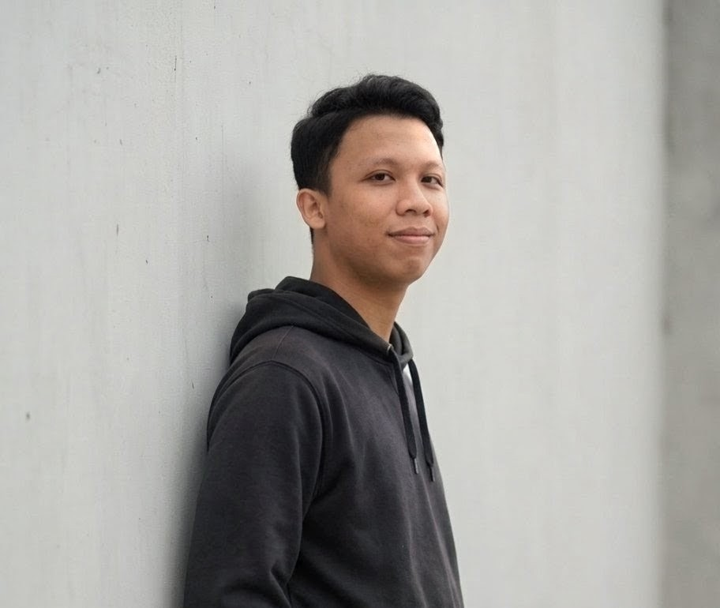

Muhammad Noval Reza Ramadhan
Pendidikan: Sekolah Tinggi Teknologi Terpadu Nurul Fikri
Program Studi: Teknik Informatika (Kelas Siang)
Tanggal Lahir: 5 Oktober 2007
Domisili: Jakarta
Tentang Saya
Halo, perkenalkan nama saya Muhammad Noval Reza Ramadhan. Saya saat ini adalah mahasiswa aktif di program studi Teknik Informatika, Sekolah Tinggi Teknologi Terpadu Nurul Fikri. Sebelumnya, saya merupakan lulusan SMK Respati 1 Jakarta dengan jurusan Teknik Komputer dan Jaringan. Fokus akademik dan karir saya saat ini berada di bidang cybersecurity, infrastruktur jaringan, serta administrasi sistem, yang sering saya asah melalui konfigurasi home server berbasis Linux Ubuntu dan latihan simulasi keamanan siber.
Di luar dunia IT, saya memiliki ketertarikan besar pada dunia otomotif dan Teknologi. Saya kerap melakukan perawatan CVT mandiri pada motor, Serta Saya mampu Melakukan Perawatan Laptop . Untuk hiburan, saya senang memelihara ikan cupang dan hamster, serta bermain game seperti Valorant, Mobile Legends, dan game balap lintas platform.